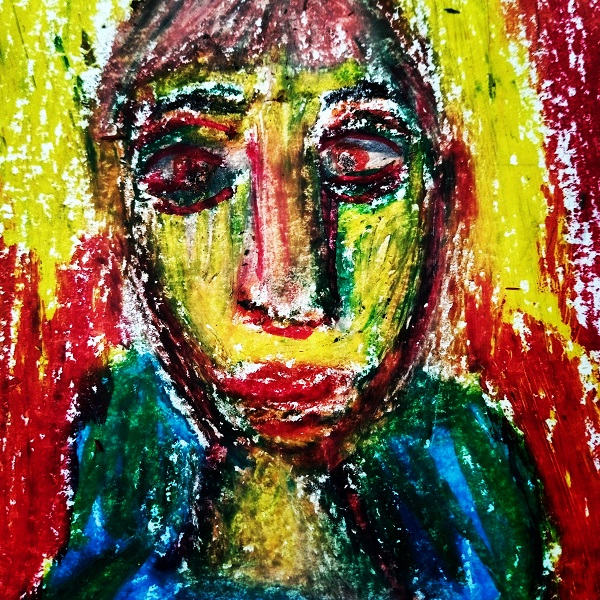
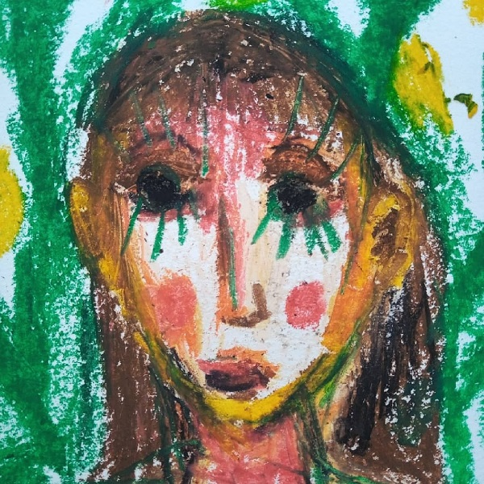

criar pele para as palavras
filhos da lua, criaturas noturnas:
onírico & o outro.
o que queres adormecer?
onírico toma tudo pelas mãos, lentas e minguantes.
o outro-fera descansa o pelo sob a luz solar dos dias.
 
criaturas que perambulam territórios
criam e destroem na selva,
no concreto, carregam potencial no corpo
fragmentos espaciais e temporais.
nós também somos
mas você ainda não percebeu
lune - 2024 - brasil
um salve artistes de rua, criaturas, corpas revolucionárias que aqui se encontram - de uma forma ou outra.